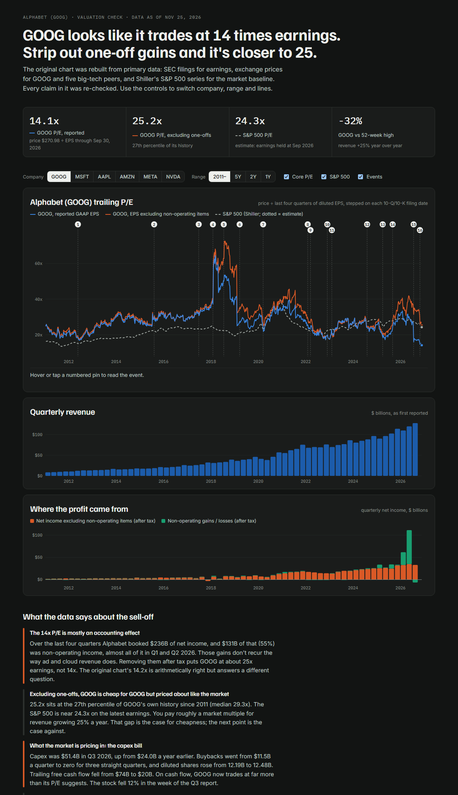

Trading Research
Market and valuation studies, each rebuilt from primary data with the checks written down. Nothing here is investment advice.

Is GOOG actually cheap?
GOOG's reported P/E of 14x drops one-off gains of $131B. Without them it's about 25x, roughly the S&P 500's level. The sell-off tracks the AI capex bill. Includes five big-tech peers.